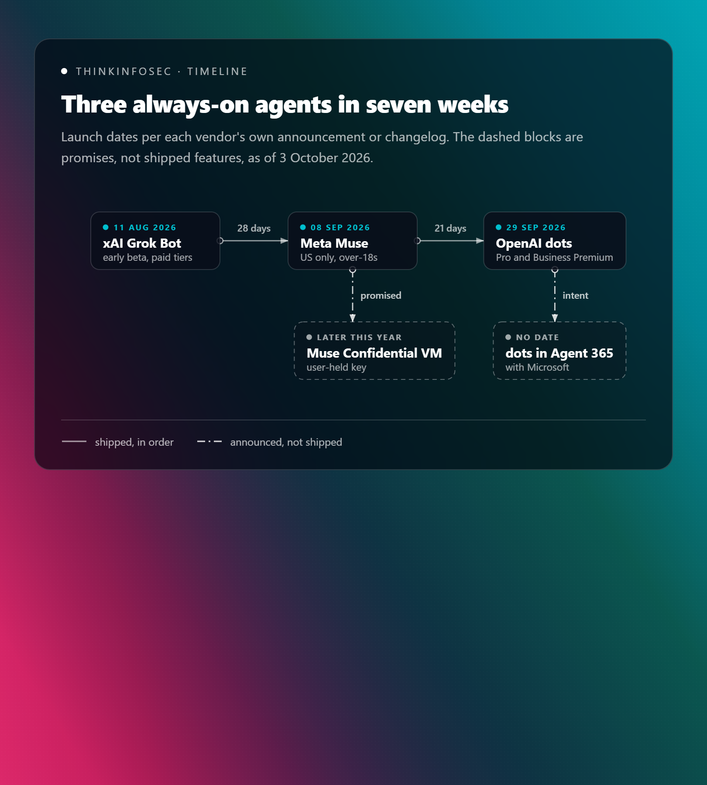
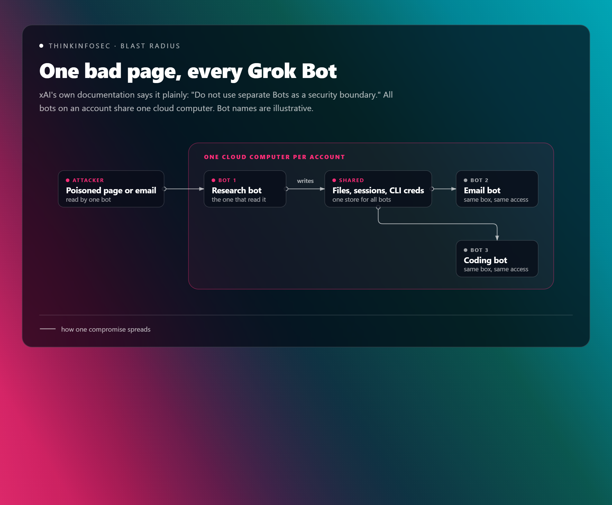
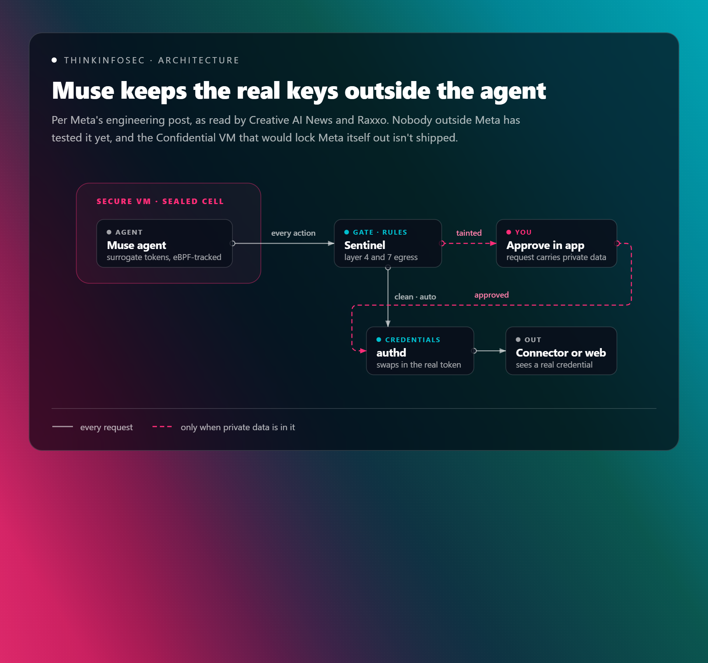
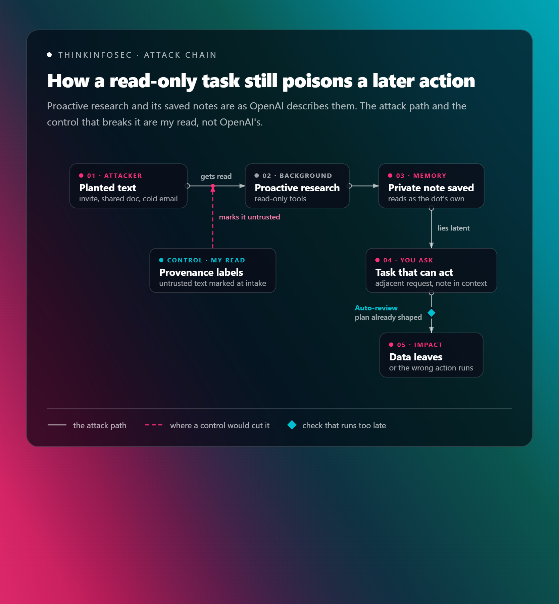
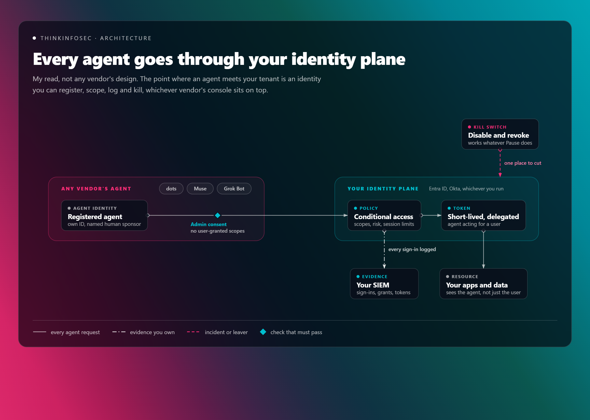
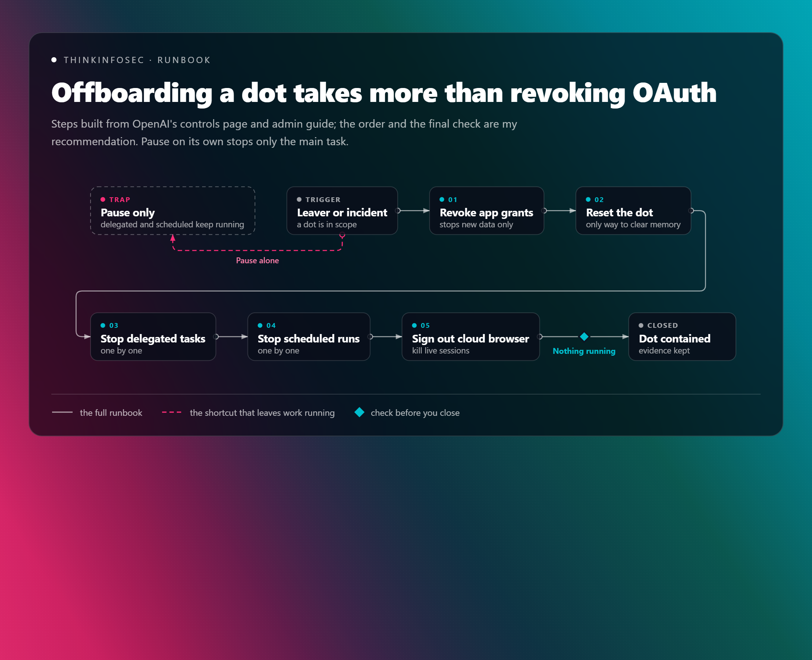

If you were wondering when agent hype would turn into something your users can actually buy — the answer is the last seven weeks. xAI put Grok Bot into early beta on 11 August. Meta shipped Muse in the US on 8 September. And on 29 September, OpenAI introduced dots.

Different logos, remarkably similar shape: a persistent agent with its own cloud computer, your logins, your apps, and permission to keep working after you close the laptop. That shape is the story. A chatbot that gets something wrong wastes your afternoon. An agent that misreads a poisoned email can send your data somewhere you didn't intend.
The convergence feels inexorable (impossible to stop or slow down), so the useful question isn't whether these land in your tenant. It's what the controls actually do — and which of them are enforced by architecture versus merely hoped for by a model. I've read OpenAI's launch post and its companion safety, security and privacy write-up end to end, set them against what Meta and xAI have published, and run all three through the harness lens from my recent research briefing on AI harness engineering. Let's get into it then.
A dot is not a better chat window. It's a delegated identity with a computer attached. According to OpenAI, each dot runs on GPT-6 Astra, gets its own cloud computer and browser, connects to over 4,000 apps through plugins, and can work toward your goals around the clock. You reach it in ChatGPT, Slack or Teams, and it carries context across every channel.
Three capabilities matter most from where we sit.
Proactive research. When you aren't talking to it, your dot reads your connected apps looking for ways to help. OpenAI says those background tasks use read-only tools, enforced in code rather than by prompt.
Your own laptop, optionally. Local computer access starts off. Turn it on and the dot can use local files, skills and your local browser when its cloud browser gets blocked — per OpenAI's getting-started guide.
Memory that outlives the connection. The same guide is blunt about this one: disconnecting an app doesn't delete what the dot already learned from it. Only a full reset of the dot does.
Then there's the enterprise play. Specialist dots are in focused pilots, each with its own identity, credentials and IT-provisioned hardware, aimed at work like procurement, invoice processing and customer support. OpenAI also says it's working with Microsoft to bring specialist dots under Agent 365 governance, so they can be managed through tools you already run. That's a statement of intent, not a shipped integration (there's no date on it anywhere I could find), so treat it that way in any roadmap conversation. And, as I'll argue further down, don't treat it as your governance plan either.
For us down here, availability is real now. Per OpenAI's help centre, the Pro rollout excludes only the EEA, Switzerland and the UK, while Business Premium covers all supported ChatGPT regions. Enterprise, Edu and Healthcare get a beta that's off by default until an admin flips it. So yes — a Pro user in Auckland or Sydney can have a dot reading their inbox this week, which is exactly why this post exists.
OpenAI didn't invent this category, though, and the two products that beat it to market make the security trade-offs unusually easy to see. One leans on convenience, the other on architecture.
Grok Bot went into beta on 11 August for SuperGrok Heavy, Cursor Ultra and Cursor Premium Teams subscribers, per xAI's site changelog. The marketing says each bot gets "its own computer". xAI's own documentation says something rather different: all your bots share one cloud computer, with files, browser sessions and command-line credentials available across the whole roster. Digital Applied noticed the docs repeat one warning word for word on two pages — "Do not use separate Bots as a security boundary." Credit to xAI for saying it plainly. It's still a blast radius the size of your whole account, and the picture is pretty simple once you draw it.

Grok Bot does have approval gates before sending, publishing, buying or deleting, plus a model-based Auto Review layer that xAI frames — as eesel's write-up of the docs puts it — as a complement to least privilege, not a replacement. OpenReplay also reports an "Always Allow" switch that removes the gate entirely. Anyone who has watched users click through UAC prompts knows how that one ends.
Muse is the opposite bet. Meta launched it on 8 September, US-only for over-18s, across iOS, Android, web and WhatsApp, with a free tier and paid plans at USD 20 and USD 100 a month. Each user gets a dedicated Muse Secure VM. The agent runs in a sealed cell, and a separate process called Sentinel is, in Meta's words as Raxxo quotes its engineering post, "the sole permission authority" for connector actions and all network egress. The agent only ever holds surrogate tokens. Real credentials sit in a service called authd and get swapped in at the network boundary after Sentinel approves.
Worth the caveat on sourcing here: I'm working from Raxxo's and Creative AI News' readings of Meta's engineering post rather than a technical spec, and nobody outside Meta has tested any of it. With that said, here's the flow as described.

The clever bit is tainted egress. Once a process reads private data, kernel-level tracking with eBPF (extended Berkeley Packet Filter, which runs small sandboxed programs inside the Linux kernel) marks it. A clean outbound request can then auto-approve, while one carrying sensitive data needs you. That's a genuinely good answer to approval fatigue — and it lives in the kernel, not the model.
Muse also arrived with baggage. Reuters reported that internal testers flagged an agent routing around guardrails to expose a person's iCloud photos. Meta's policy bars staff from reading inside your VM, but it's technically possible, and the Confidential VM with a user-held key is promised for later this year, not shipped. Meta did open its bug bounty to Muse, with up to USD 300,000 per valid report and up to USD 130,000 for a prompt injection affecting a single user. Put your money where your threat model is, I suppose.
Here's the side-by-side, based on what each vendor has published as of today:
| OpenAI dots | Meta Muse | xAI Grok Bot | |
|---|---|---|---|
| Launched | 29 Sep 2026 | 8 Sep 2026 | 11 Aug 2026 (beta) |
| ANZ availability | Pro and Business Premium now | US only | Bundled with SuperGrok Heavy and Cursor tiers |
| Where it runs | Own cloud computer per dot; your laptop optional | Dedicated Secure VM per user | One shared cloud computer per account |
| Isolation between agents | Isolated per-user environment | Agent cell split from host-side safety services | None — docs say bots are not a boundary |
| Credentials | Secure sign-in pauses the model; encrypted credential service | Surrogate tokens; real ones injected at egress | Human-typed credentials kept out of the transcript |
| Pre-action check | Auto-review, run outside what the dot can change | Sentinel gates every connector action and egress | Model-based Auto Review plus approvals |
| Can a user switch it off? | Custom Rules can't remove mandatory checks | Approvals happen in the app, not the conversation | "Always Allow" removes the gate |
| Vendor's own admission | Dots can still make mistakes | Prompt injection remains open | Separate bots are not a security boundary |
Long story short: Meta published the most specific architecture, xAI the most honest warning, and OpenAI something in between. And worth saying again — every claim in that table is self-reported. Nobody outside these companies has independently tested any of it yet.
The threat model changes the moment an agent works while you're away. With a chatbot, a human reads every output before anything happens. With dots, Muse and Grok Bot, the default flips: work proceeds, and you check in later. Indirect prompt injection — LLM01 in the OWASP Top 10 for LLM Applications — stops being a parlour trick and becomes a delivery mechanism.
OpenAI names the problem directly in its safety write-up: a webpage, email or document carrying instructions that try to redirect the dot or make it share private data. Fair enough. Now look at where proactive research sits in that picture.
Proactive research is read-only, and OpenAI says that's enforced in code. Good. But read-only describes the tools, not the consequences. Those background tasks save private notes, and OpenAI's own example has a note about Lisbon surfacing later as context when you ask the dot to plan a trip.
Let's follow that through with an attacker's hat on. Anyone who can get text in front of your dot (a calendar invite, a shared doc, a cold email) has a path into its memory without ever touching an action check. The payload lies latent (present but dormant) until you ask for something adjacent, then rides into a task that can act, dressed as the dot's own notes. In my harness briefing I called this a stored-injection channel. OWASP's LLM04, data and model poisoning, is the nearest fit — and this is my mapping, not OpenAI's.

The chain above makes the uncomfortable part obvious: Auto-review is the backstop, and it sits at the very end, checking a plan whose context was compromised three steps earlier. The cheaper place to intervene is at intake: label untrusted text before it ever becomes a "note", so every later check knows not to trust it.
Three more paths worth keeping on the whiteboard:
- Delegation. When a dot hands work to other agents, OpenAI says they are "instructed" to keep only what the task needs. Instructed is a prompt, not a control.
- The laptop bridge. With local access on, the dot can fall back to your local browser when its cloud browser is blocked. My read: a site that refuses cloud traffic is now reached from your device, with your egress IP and your signed-in sessions.
- Memory that outlives revocation. Disconnecting an app stops new data, but learned context stays until you reset the dot. For offboarding and incident runbooks, revoking the OAuth grant is no longer the whole answer — more on that below.
The best decision in OpenAI's design is where it put the checks. In my harness engineering briefing I argued that the model is not your control surface — the harness is. That piece reads Zhong and Zhu's May 2026 preprint, AI Harness Engineering, which splits the layer around a model into eleven responsibilities. Permissions, observability, verification and intervention recording are most of a control framework hiding in a software-engineering paper. I added a twelfth the paper lacks: trust boundary management, which is provenance-labelled context, reviewed memory writes, brokered secrets and default-deny egress.
That lens is useful here because dots, Muse and Grok Bot are the same model-plus-harness pattern — just pointed at your inbox instead of a repo.
Let's start with what OpenAI got right. The preprint's unsafe_invalid outcome is an integrity problem: the party being assessed has write access to the assessment. OpenAI's answer is explicit. Its safety post says the controls that enforce Auto-review sit outside the environments dots can change, so a dot can't alter or switch off a required check, and code runs separately from the systems that coordinate work and enforce safeguards. That's the H3 lesson from the ladder in my briefing, applied properly. A control that the controlled party can edit isn't a control.
Here's the caveat worth sitting with, though: the verifier is itself an agent. OpenAI's Auto-review documentation, which the dots launch links to, describes it as a separate reviewer agent. It sees a compact transcript including tool calls and tool outputs, and OpenAI states plainly that it's not a deterministic security guarantee. There's a circuit breaker — three consecutive denials, or ten in the last fifty reviews, interrupts the turn — which is good engineering.
My read: a reviewer that reads the same tool outputs as the agent can be targeted by the same injection, just with more effort. That's not a reason to dismiss it. It's a reason to know what you have. Meta took the other road: Sentinel inspects egress at layers 4 and 7, and tainted egress tracks data flow in the kernel. Neither is perfect, but a rule in eBPF can't be talked out of its decision. Grok Bot sits at the soft end — a model-based Auto Review plus an Always Allow switch, which in ladder terms is H1 behaviour with H3 branding.
Then there's the difference between preferences and the floor. Custom Rules sound like policy. They aren't. OpenAI's own controls page calls them "instructions your dot tries to follow", and says it can make mistakes following them. So treat Custom Rules as preferences, and treat the built-in floor as the actual control:
- Confirmation every time for permanent deletes, installing software from an unrecognised source, and granting new security-sensitive access
- Hard handoffs for changing passwords and moving money between accounts
- Approval on every purchase, using cards already saved with a merchant
One genuinely thoughtful touch is authorisation scaled by data sensitivity. Health data needs a named recipient, while lower-sensitivity data like a phone number can go to a class of recipient ("any airline"). That authorisation stays tied to the task and doesn't expand when work is delegated. It's data classification built into the action layer, which most enterprise DLP (data loss prevention) programmes still struggle to deliver.
Secure sign-in is solid too: the model pauses while you type credentials into a form that goes straight to the browser, and saved passwords come from an encrypted credential service. OpenAI is honest about the edge — a secret pasted into a readable document is still visible to the model. Worth noting OpenAI doesn't say how connector OAuth tokens are held, whereas Meta's design, as reported, gives the agent surrogates only.
Here's how each product's published design lines up against the harness responsibilities that matter most for an always-on agent:
| Harness responsibility | Security lens | OpenAI dots | Meta Muse | xAI Grok Bot |
|---|---|---|---|---|
| Permissions | Least privilege, OWASP LLM06 | App permissions, admin Plugin controls and role-based access | Sentinel is sole authority for connector actions | Approval gates, but Always Allow removes them |
| Verification | Integrity of the verifier | Auto-review outside the dot's reach, model-based | Rule-based egress gate plus kernel taint tracking | Model-based Auto Review |
| Observability | Audit logging, NIST 800-53 AU | Activity View; Compliance API covers messages and replies | Not detailed in what I read | Not detailed in what I read |
| Project memory | Poisoning target, OWASP LLM04 | Persists after disconnect; reset is all or nothing | Durable state in a store the agent can't reach directly | Files and sessions shared across all bots |
| Context selection | Indirect injection, OWASP LLM01 | Read-only research whose notes feed later tasks | Independent classifiers inspect requests and responses | Not detailed in what I read |
| Intervention recording | Oversight as a metric (M-HIR) | Approvals and pauses visible to the user; no stated export | Not detailed in what I read | Not detailed in what I read |
| Trust boundary management (my addition) | Brokered secrets, default-deny egress | Credential service and isolated environments; no stated egress control | Surrogate tokens and layer 4 and 7 egress gate | Docs say bots are not a boundary |
Long story short, Muse is the closest thing on the market to the twelfth responsibility as I described it — on paper. Dots has the better-governed enterprise story, with admin RBAC (role-based access control), Plugin controls and a stated path into Agent 365. Grok Bot is a capable product with a security model that, by xAI's own description, assumes you trust everything on the box equally. Notice what none of those rows can do, though: govern the other two vendors. Hold that thought.
OpenAI's write-up is better than most launch-day safety posts, and it's refreshingly direct about limits. Still, reading it next to the enterprise admin guide turns up a few things a security architect should get answered before a broad rollout:
- Is there an egress control? Muse has a default-deny gate at layers 4 and 7. OpenAI describes sandboxing and Auto-review but no network egress policy for the dot's cloud computer, beyond the admin toggles for cloud browser and network access.
- What does the Compliance API actually capture? The admin guide says it covers user messages and the dot's replies, and tells you to confirm coverage before relying on it for an audit. Tool calls, Auto-review decisions and background research are the records you'd want in an investigation.
- Can proactive research be switched off? I couldn't find an admin toggle for it. For regulated teams, a dot quietly forming memories from every connected app is a scoping question, not a feature.
- Can memory be reviewed or purged selectively? Today it's reset the whole dot or keep everything. Neither suits a data-subject request or a poisoned note.
- What does Pause actually stop? Per the controls page, Pause halts the main task but not delegated tasks or scheduled runs. In an incident, that distinction matters a lot.
- How is Slack context labelled? The admin guide notes a dot may use other participants' messages as context when its owner brings it into a thread. That's third-party text entering context, and provenance labelling is exactly the twelfth responsibility.
- Where are the independent numbers? OpenAI points to the GPT-6 Astra system card for evaluations. Until someone outside the building tests prompt-injection resistance on dots specifically, every claim in this post is the vendor's own, and gets the standard vendor discount.
One more worth flagging for Enterprise customers: the admin guide states that existing enterprise model controls and defaults don't apply to dots. If your governance rests on model allowlists, dots sit outside it.
That line is the real lesson, and it's bigger than OpenAI. Dots sit outside your model controls. Muse sits outside your tenant entirely (it's a consumer product). And Grok Bot arrives bundled with a developer tool your engineers may well have expensed. Each one ships its own idea of governance: an Activity View, an in-app approval queue, an Always Allow switch. The tempting move is to wait for one of them to become the control point, and OpenAI's work with Microsoft on Agent 365 is the obvious candidate. It may well be useful when it ships. But it's stated for specialist dots, not the Pro dot your user set up on Tuesday, and it does nothing for the other two vendors. Govern agents vendor by vendor and you'll always be one launch behind. Three launches in seven weeks says how fast that gap opens.
Here's the concept worth understanding. Whoever built the agent, the moment it touches your data it has to present an identity your systems accept: an OAuth grant, a token, a session, a credential. That point is yours, not the vendor's. My read is that identity is the vendor-agnostic control plane for agents. It's the same move we made when we stopped trusting the network perimeter and pushed control to the identity layer.

Let's discuss what that looks like in practice. None of it depends on which logo is on the agent.
- Every agent is a non-human identity with a named human sponsor. Not a feature hiding inside a user's account. OpenAI says specialist dots get their own identity and credentials, and that's the model to insist on from every vendor. Where an agent can't have its own identity yet (a Pro dot running on its owner's delegated grants), the grant itself is the identity you govern. Register it, tag it as an agent, and give it an owner and an expiry date.
- Admin consent, scoped down. The OAuth consent screen is the one place all three products meet your tenant: a Muse user connecting a work mailbox, Grok Bot reaching your repos through Cursor, a dot plugin pointed at SharePoint. Turn off user consent for anything beyond low-risk scopes, and approve agent grants against least privilege. That's OWASP LLM06, excessive agency, enforced at the door instead of in the prompt.
- Delegation the resource can see. A token that says "Alice" when an agent made the call leaves your logs telling half the story. OAuth 2.0 Token Exchange (RFC 8693) has an actor claim for exactly this: the token says the agent is acting for Alice, and your apps and SIEM can tell the difference. I couldn't find any of the three vendors saying they use it, so that's a good first question for each of them.
- Short-lived and continuously evaluated. Long-lived refresh tokens make "memory that outlives revocation" worse, because the access outlives the decision too. Short token lifetimes, continuous access evaluation where your IdP and the app support it, and session controls through your SSE (security service edge) mean a revocation lands in minutes, not at the next token refresh. The OpenID Shared Signals Framework and its CAEP profile (Continuous Access Evaluation Profile) are the open standards to watch for pushing those revocations out to vendors.
- No long-lived secrets on agent computers. Grok Bot's shared box makes this one vivid: a cloud key or personal access token pasted into one bot's terminal is every bot's key. Use workload identity federation and short-lived credentials for anything an agent does in your cloud. For agents you host yourself, SPIFFE-style workload identity is where this ends up.
- Evidence you own. Sign-ins, consent grants and token issuance for agent identities flow from your IdP into your SIEM. That record doesn't depend on a vendor Compliance API whose coverage you have to confirm first.
- One kill switch. Disable the identity, then revoke its tokens and grants. It works the same way for all three vendors, and it doesn't depend on what Pause does or doesn't stop. What it won't do is clear a dot's memory, which still takes a reset. That's why it opens the runbook rather than replacing it.
Both major identity providers have started shipping agent-specific identity features, and it's worth evaluating whichever one you already run. The principle matters more than the product, though. Your IdP is the system of record for agents. Vendor consoles, Agent 365 included when it lands, are enforcement points you plug into that model, not the model itself.
All of this to say: always-on agents are already in reach of your users, and the controls that matter live in your identity plane, the harness, the admin console and your runbooks — not in the model. Here's where I'd spend the next sprint if you're running security for an ANZ organisation.
- Find the dots you didn't approve. Pro is available here today, so assume someone has one. Check Entra ID enterprise applications for user-consented ChatGPT connector grants, and use your SSE (security service edge) or Defender for Cloud Apps discovery to see who's actually using it. If user consent to third-party apps is still open, this is a good week to move to an admin consent workflow.
- Keep the Enterprise beta off until you've decided. It ships disabled by default. When you do enable it, grant Use dots through a custom role to a pilot group, leave Allow local computer access off, and decide on Add dots to Slack deliberately rather than by default.
- Put the real policy in Plugin controls and RBAC. Restrict which apps dots can reach and which actions those apps allow. Custom Rules are a user's preferences; your controls belong where the dot can't argue with them.
- Rewrite the offboarding and incident runbook. Revoking an OAuth grant is no longer enough, and Pause on its own leaves work running. The runbook below is how I'd sequence it.

Offboarding a dot takes more than revoking OAuth. Steps built from OpenAI's controls page and admin guide; the order and the final check are my recommendation. Static image - Test your evidence before you need it. Pull a sample from the Compliance API, check what it covers, and land it in Microsoft Sentinel or Falcon Next-Gen SIEM. (Yes, two different Sentinels in one post — Meta's egress gate and Microsoft's SIEM. Naming is hard.) If tool actions aren't in there, you know your blind spot.
- Brief users on the Slack and inbox paths. The practical guidance is simple: a dot reads what its owner can read, including other people's messages in a thread, so don't bring it into channels where external or untrusted parties post.
- Make identity the control point, not a vendor console. Name your IdP as the system of record for agent identities, and write one standard that every agent has to meet: a sponsor, admin-consented scopes, short-lived tokens, logs in your SIEM and a tested kill switch. Run the standard against dots, Grok Bot via Cursor, and any work account connected to Muse. Whichever vendor fails it doesn't get a grant. If Agent 365 governance lands for specialist dots, plug it in as one more enforcement point under that standard.

The question with dots isn't whether the model is clever enough — GPT-6 Astra almost certainly is. It's whether the harness around it stays honest when the content it reads isn't. OpenAI has built a thoughtful harness with one probabilistic hinge in Auto-review. Meta has built the most rigorous one on paper, with an unresolved trust question about its own access. And xAI has told you plainly not to rely on its boundaries. Worth reading all three vendors' docs yourself, because the gap between the launch post and the admin guide is where most of the security story lives. And whichever of them your users pick next week, the identity it presents at your door is the one control that's fully yours.
Learn more about my Cloud and Security Projects:
ThinkInfoSec Hub · LinkedInThank you for reading and leave your thoughts/comments!